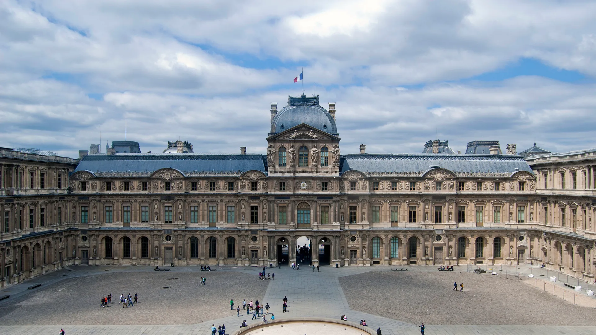

{kind=link}

BnF Richelieu
1868년 앙리 라브루스트가 주철 기둥과 9개 도자기 돔으로 완성한 19세기 건축의 걸작 '라브루스트 열람실'과 일반에 전면 무료 개방된 거대한 타원형 '오발 열람실(Salle Ovale)', 프랑스 국립도서관 박물관.

12세기 필리프 2세의 중세 요새에서 출발하여 800년간 프랑스 국왕들의 궁전으로 증축된 뒤 1793년 대중에게 개방된 세계에서 가장 크고 가장 많은 방문객이 찾는 국립 박물관(유네스코 세계유산)이다.
소장품 38만여 점 가운데 엄선된 3만 5천여 점의 인류 문명사 최고 걸작들이 73,000㎡의 광대한 궁전 회랑에 상설 전시되어 있다.
1989년 건축가 이오 밍 페이(I. M. Pei)가 설계한 현대적인 중앙 유리 피라미드(Pyramide du Louvre) 아래로 진입하여, 레오나르도 다빈치의 『모나리자』, 『사모트라케의 니케』, 『밀로의 비너스』라는 '루브르 3대 보물'을 비롯해 고대 이집트, 메소포타미아, 그리스·로마, 르네상스 이탈리아와 프랑스 대형 회화의 정수를 만날 수 있다.
"루브르를 '완주'하려는 시도는 실패의 지름길이다. 2.5~3시간의 한정된 시간 동안 드농(Denon) 관과 쉴리(Sully) 관의 핵심 마스터피스 동선에 집중하고, 궁전 창문 너머 센 강과 카루젤 정원을 호흡하는 지혜가 필요하다." 아침 첫 시간 슬롯으로 입장해 사모트라케의 니케와 모나리자를 먼저 관람한 뒤, 프랑스 낭만주의 대작(민중을 이끄는 자유의 여신)과 밀로의 비너스를 둘러보고 나오는 전략을 권장한다.
| 운영시간 | 월·목·토·일 09:00–18:00 · 수·금 09:00–21:00 (입장 마감 폐관 1시간 전) · 화요일 휴관 |
|---|---|
| 휴무 | 화요일 |
| 요금 | 비EEA €32 |
| 예약 | 온라인 시간지정 예약 권장 (무료 입장 대상자 포함) — ticket.louvre.fr |
루브르는 피라미드 나폴레옹 홀을 중심으로 3개의 날개로 갈라진다. 1. 드농 관 (Aile Denon, 남쪽 센 강변): - 가장 인기 있는 구역. 1층 다루 계단의 『사모트라케의 니케』, 2층 국가의 방(Salle des États)의 『모나리자』, 그랑드 갈르리(Grande Galerie)의 이탈리아 르네상스 회화, 들라크루아의 『민중을 이끄는 자유의 여신』, 제리코의 『메두사호의 뗏목』. 2. 쉴리 관 (Aile Sully, 동쪽 쿠르 카레 둘레): - 루브르의 역사적 뿌리. 지하 중세 루브르 성벽 및 해자 유적, 1층 고대 그리스 『밀로의 비너스』, 고대 이집트 스핑크스. 3. 리슐리외 관 (Aile Richelieu, 북쪽 리볼리 가변): - 상대적으로 여유로운 구역. 유리 채광 중정의 프랑스 조각 코르트(Cour Marly / Cour Puget), 함무라비 법전 비석, 2층의 화려한 나폴레옹 3세 아파트(Appartements Napoléon III).
| 항목 | 상세 정보 |
|---|---|
| 위치 | Musée du Louvre, 75001 Paris |
| 운영 시간 | 수요일–월요일 09:00–18:00 (금요일 야간 21:45까지 연장 개방) / 매주 화요일 휴관 |
| 입장료 | 일반 성인 €22.00 (온라인 사전 예매가 기준) / 18세 미만 및 18–25세 EU 거주자 무료 |
| 사전 온라인 예매 (필수) | 공식 웹사이트(louvre.fr)에서 입장 날짜 및 30분 단위 시간 슬롯 사전 예매 필수 (현장 매표 불가) |
| 교통 접근 | 메트로 1/7호선 Palais Royal - Musée du Louvre역 지하 직결 |
| 편의시설 | 무료 오디오 가이드(닌텐도 3DS), 무료 짐 보관 락커(피라미드 하부) 완비 |
1868년 앙리 라브루스트가 주철 기둥과 9개 도자기 돔으로 완성한 19세기 건축의 걸작 '라브루스트 열람실'과 일반에 전면 무료 개방된 거대한 타원형 '오발 열람실(Salle Ovale)', 프랑스 국립도서관 박물관.

18세기 원형 곡물거래소를 세계적인 건축가 안도 다다오가 노출 콘크리트 원통 실린더로 리노베이션한 현대미술관. 프랑수아 피노 회장의 세계적 현대미술 컬렉션과 1889년 돔 천장 무역 파노라마 프레스코화.

렌조 피아노와 리처드 로저스가 건물 배관과 골격을 외벽으로 노출시킨 20세기 하이테크 건축의 전설이자 유럽 최대 근현대미술관. ⚠ 2025년 가을부터 2030년까지 전면 개보수 공사로 본관 폐관 중.

클로드 모네가 43년간 직접 꽃과 연못을 가꾸며 불후의 『수련』 대작을 창조해낸 살아있는 인상파 캔버스. 초록색 일본식 다리가 걸린 '물의 정원(Jardin d'eau)'과 핑크빛 모네 생가 아틀리에.

1900년 파리 만국박람회를 위해 건립된 45m 높이 아르누보 철골 유리 네이브(Nave)의 기념비적 국립 전시장. 2024 파리 올림픽을 거쳐 리노베이션 완료 후 재개관한 파리 문화 예술의 중심지.

중세 소르본 대학 교수와 학생들이 공용어로 라틴어를 쓰던 데서 유래한 800년 파리 지성의 요람이자 센 강 좌안(Rive Gauche)의 심장. 프랑스 위인들의 성소 팡테옹(Panthéon), 셰익스피어 앤 컴퍼니, 뤽상부르 공원.